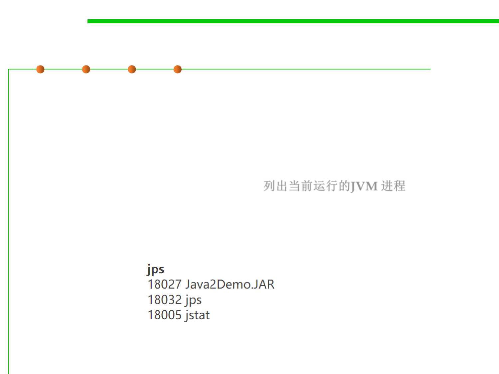

jps
8.2 Dynamic Program Analysis Methods and Tools
▪ Java command line tools for profiling are installed in the bin sub-
directory of the JDK home installed directory.
▪ jps (JVM Process Status Tool) 虚拟机进程状况工具
– The jps tool lists running applications of the instrumented JVMs on the
target system. If jps is run without specifying a hostid, it will look for
instrumented JVMs on the local host. 列出当前运行的JVM 进程
– The jps command uses the java launcher to find the class name and
arguments passed to the main method.
– E.g. Listing the instrumented JVMs on the local host:
– https://docs.oracle.com/javase/8/docs/technotes/tools/unix/jps.html